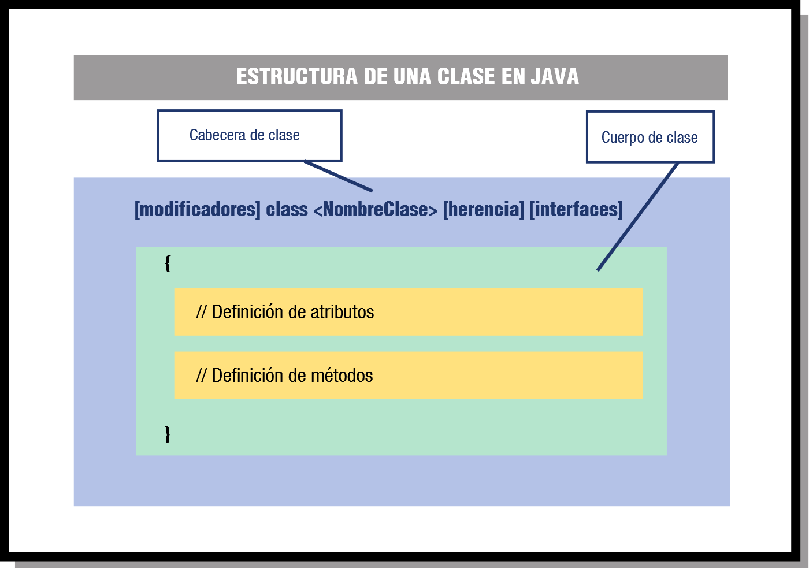
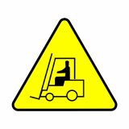

| Fecha | Versión | Descripción |
|---|---|---|
| 07/12/2021 | 1.0.0 | Versión inicial |
| 10/09/2025 | 1.0.1 | Revisión del tema. |
Unidad 5 - POO Clases y Objetos
1. Clases y Objetos
Las clases representan un tipo de dato complejo y están compuestas por atributos y métodos. A diferencia de los arrays, las clases agrupan datos de diferentes tipos que se denominan atributos y también métodos que nos permiten trabajar con esos atributos.
Una clase por tanto, especifica las características comunes de un conjunto de objetos. Sin embargo, cuando queramos utilizar ese tipo de dato en nuestros programas tendremos que crear un objeto. De esta forma los programas que escribas estarán formados por un conjunto de clases a partir de las cuales irás creando objetos que se interrelacionarán unos con otros. En muchos casos también se habla de las clases como de las plantillas o planos a partir de los cuales se crean los objetos.
Además de ellos, veremos que las clases nos van a permitir organizar nuestros programas de otra manera. Es a lo que vamos a llamar programación orientada a objetos (POO). Vamos a utilizar los mismos elementos que hemos utilizado hasta ahora pero organizados en base a clases.
1.1 Repaso del concepto de objeto
Desde el comienzo del módulo llevas utilizando el concepto de objeto para desarrollar tus programas de ejemplo. En las unidades anteriores se ha descrito un objeto como una entidad que contiene información y que es capaz de realizar ciertas operaciones con esa información. Según los valores que tenga esa información el objeto tendrá un estado determinado y según las operaciones que pueda llevar a cabo con esos datos será responsable de un comportamiento concreto.
Recuerda que entre las características fundamentales de un objeto se encontraban la identidad (los objetos son únicos y por tanto distinguibles entre sí, aunque pueda haber objetos exactamente iguales), un estado (los atributos que describen al objeto y los valores que tienen en cada momento) y un determinado comportamiento (acciones que se pueden realizar sobre el objeto).
Algunos ejemplos de objetos que podríamos imaginar podrían ser:
- Un coche de color rojo, marca SEAT, modelo Toledo, del año 2003. En este ejemplo tenemos una serie de atributos, como el color (en este caso rojo), la marca, el modelo, el año, etc. Así mismo también podríamos imaginar determinadas características como la cantidad de combustible que le queda, o el número de kilómetros recorridos hasta el momento.
- Un coche de color amarillo, marca Opel, modelo Astra, del año 2002.
- Otro coche de color amarillo, marca Opel, modelo Astra y también del año 2002. Se trataría de otro objeto con las mismas propiedades que el anterior, pero sería un segundo objeto.
- Un cocodrilo de cuatro metros de longitud y de veinte años de edad.
- Un círculo de radio 2 centímetros, con centro en las coordenadas (0,0) y relleno de color amarillo.
- Un círculo de radio 3 centímetros, con centro en las coordenadas (1,2) y relleno de color verde.
Si observas los ejemplos anteriores podrás distinguir sin demasiada dificultad al menos tres familias de objetos diferentes, que no tienen nada que ver una con otra:
- Los coches.
- Los círculos.
- Los cocodrilos.
Es de suponer entonces que cada objeto tendrá determinadas posibilidades de comportamiento (acciones) dependiendo de la familia a la que pertenezcan. Por ejemplo, en el caso de los coches podríamos imaginar acciones como: arrancar, frenar, acelerar, cambiar de marcha, etc. En el caso de los cocodrilos podrías imaginar otras acciones como: desplazarse, comer, dormir, cazar, etc. Para el caso del círculo se podrían plantear acciones como: cálculo de la superficie del círculo, cálculo de la longitud de la circunferencia que lo rodea, etc.
Por otro lado, también podrías imaginar algunos atributos cuyos valores podrían ir cambiando en función de las acciones que se realizaran sobre el objeto: ubicación del coche (coordenadas), velocidad instantánea, kilómetros recorridos, velocidad media, cantidad de combustible en el depósito, etc. En el caso de los cocodrilos podrías imaginar otros atributos como: peso actual, el número de dientes actuales (irá perdiendo algunos a lo largo de su vida), el número de presas que ha cazado hasta el momento, etc.
Como puedes ver, un objeto puede ser cualquier cosa que puedas describir en términos de atributos y acciones.
| Un objeto no es más que la representación de cualquier entidad concreta o abstracta que puedas percibir o imaginar y que pueda resultar de utilidad para modelar los elementos el entorno del problema que deseas resolver. |
|---|
1.2 El concepto de clase
Está claro que dentro de un mismo programa tendrás la oportunidad de encontrar decenas, cientos o incluso miles de objetos. En algunos casos no se parecerán en nada unos a otros, pero también podrás observar que habrá muchos que tengan un gran parecido, compartiendo un mismo comportamiento y unos mismos atributos. Habrá muchos objetos que sólo se diferenciaran por los valores que toman algunos de esos atributos.
Es aquí donde entra en escena el concepto de clase. Está claro que no podemos definir la estructura y el comportamiento de cada objeto cada vez que va a ser utilizado dentro de un programa, pues la escritura del código sería una tarea interminable y redundante. La idea es poder disponer de una plantilla o modelo para cada conjunto de objetos que sean del mismo tipo, es decir, que tengan los mismos atributos y un comportamiento similar.
| Una clase consiste en la definición de un tipo de objeto. Se trata de una descripción detallada de cómo van a ser los objetos que pertenezcan a esa clase indicando qué tipo de información contendrán (atributos) y cómo se podrá interactuar con ellos (comportamiento). |
|---|
Como ya has visto en unidades anteriores, una clase consiste en un plantilla en la que se especifican:
- Los atributos que van a ser comunes a todos los objetos que pertenezcan a esa clase (información).
- Los métodos que permiten interactuar con esos objetos (comportamiento).
A partir de este momento podrás hablar ya sin confusión de objetos y de clases, sabiendo que los primeros son instancias concretas de las segundas, que no son más que una abstracción o definición.
Si nos volvemos a fijar en los ejemplos de objetos del apartado anterior podríamos observar que las clases serían lo que clasificamos como "familias" de objetos (coches, cocodrilos y círculos).
| En el lenguaje cotidiano de muchos programadores puede ser habitual la confusión entre los términos clase y objeto. Aunque normalmente el contexto nos permite distinguir si nos estamos refiriendo realmente a una clase (definición abstracta) o a un objeto (instancia concreta), hay que tener cuidado con su uso para no dar lugar a interpretaciones erróneas, especialmente durante el proceso de aprendizaje. |
|---|
2. Estructura y miembros de una clase
Para declarar una clase en Java se usa la palabra reservada class. En la declaración de una clase vas a encontrar:
- Cabecera de la clase. Compuesta por una serie de modificadores de acceso, la palabra reservada
classy el nombre de la clase. - Cuerpo de la clase. En él se especifican los distintos miembros de la clase: atributos y métodos. Es decir, el contenido de la clase.

Como puedes observar, el cuerpo de la clase es donde se declaran los atributos que caracterizarán a los objetos que se crean a partir de la clase y donde se define e implementa el comportamiento de dichos objetos; es decir, donde se declaran e implementan los métodos para manipular esos objetos.
2.1 Declaración de una clase
La declaración de una clase en Java tiene la siguiente estructura general:
[modificadores] class <NombreClase> [herencia] [interfaces] { // Cabecera de la clase
// Cuerpo de la clase
Declaración de los atributos
Declaración de los métodos
}
Un ejemplo básico pero completo podría ser:
class Punto {
// Declaración de los atributos: Estado
int x, y;
// Declaración de los métodos: Comportamiento
int obtenerX () {
return x;
}
int obtenerY() {
return y;
}
void establecerX(int valor) {
x = valor;
}
void establecerY(int valor) {
y = valor;
}
}
En este caso se trata de una clase muy sencilla en la que el cuerpo de la clase, el área entre las llaves, contiene el código y las declaraciones necesarias para que los objetos que se construyan basándose en esta clase puedan funcionar apropiadamente en un programa. En concreto, contendrá las declaraciones de atributos para contener el estado del objeto y los métodos que permitan manipular los objetos creados a partir de esa clase.
Si te fijas en los distintos programas que hemos desarrollado hasta ahora, podrás observar que cada uno de esos programas era en sí mismo una clase Java: se declaraban con la palabra reservada class y contenían algunos atributos (variables) así como algunos métodos (como mínimo el método main).
En el ejemplo anterior hemos visto lo mínimo que se tiene que indicar en la cabecera de una clase (el nombre de la clase y la palabra reservada class). Se puede proporcionar bastante más información mediante modificadores y otros indicadores como por ejemplo el nombre de su superclase (si es que esa clase hereda de otra), si implementa algún interfaz y algunas cosas más que iremos aprendiendo poco a poco.
A la hora de implementar una clase Java debes tener en cuenta:
- Por convenio, se ha decidido que en lenguaje Java los nombres de las clases deben de empezar por una letra mayúscula. Así, cada vez que observes en el código una palabra con la primera letra en mayúscula sabrás que se trata de una clase sin necesidad de tener que buscar su declaración. Además, si el nombre de la clase está formado por varias palabras, cada una de ellas también tendrá su primera letra en mayúscula. Siguiendo esta recomendación, algunos ejemplos de nombres de clases podrían ser: Recta, Circulo, Coche, CocheDeportivo, Jugador, JugadorFutbol, AnimalMarino, AnimalAcuatico, etc.
- Tanto la definición como la implementación de una clase se incluye en el mismo archivo (archivo ".java"). En otros lenguajes como por ejemplo C++, definición e implementación podrían ir en archivos separados (por ejemplo en C++, serían sendos archivos con extensiones ".h" y ".cpp").
- El archivo debe tener el mismo nombre que la clase si queremos poder utilizarla desde otras clases que se encuentren fuera de ese archivo.
Para saber más
Si quieres ampliar un poco más sobre este tema puedes echar un vistazo a los tutoriales de iniciación de Java en el sitio web de Oracle (en inglés): Java Classes.
Ejercicio
Imagina que quieres escribir una clase que represente un rectángulo en el plano. Para ello has pensado en los siguientes atributos:
- Atributos x1, y1, que representan la coordenadas del vértice inferior izquierdo del rectángulo. Ambos de tipo
double(números reales). - Atributos x2, y2, que representan las coordenadas del vértice superior derecho del rectángulo. También de tipo
double(números reales).
Con estos dos puntos (x1, y1) y (x2, y2) se puede definir perfectamente la ubicación de un rectángulo en el plano.
Escribe una clase que contenga todos esos atributos teniendo en cuenta que queremos que sea una clase visible desde cualquier parte del programa y que sus atributos sean también accesibles desde cualquier parte del código.
2.1 Cabecera de una clase
En general, la declaración de una clase puede incluir los siguientes elementos y en el siguiente orden:
- Modificadores tales como public, abstract
ofinal`. - El nombre de la clase (con la primera letra de cada palabra en mayúsculas, por convenio).
- El nombre de su clase padre (superclase), si es que se especifica, precedido por la palabra reservada extends ("extiende" o "hereda de").
- Una lista separada por comas de interfaces que son implementadas por la clase, precedida por la palabra reservada implements ("implementa").
A continuación, vendrá el cuerpo de la clase, encerrado entre llaves {}.
La sintaxis completa de una cabecera queda de la siguiente forma:
[modificadores]
class <NombreClase> [extends <NombreSuperClase>][implements
<NombreInterface1>] [[implements <NombreInterface2>] ...] {
En el ejemplo anterior de la clase Punto teníamos la siguiente cabecera:
En este caso no hay modificadores, ni indicadores de *herencia*, ni implementación de interfaces. Tan solo la palabra reservada class y el nombre de la clase. Es lo mínimo que puede haber en la cabecera de una clase.
La herencia y las interfaces las veremos más adelante. Vamos a ver ahora cuáles son los modificadores que se pueden indicar al crear la clase y qué efectos tienen. Los modificadores de clase son:
Veamos qué significado tiene cada uno de ellos:
- Modificador
public. Indica que la clase es visible y se pueden crear objetos de esa clase desde cualquier otra clase. Es decir, desde cualquier otra parte del programa. Si no se especifica este modificador, la clase sólo podrá ser utilizada desde clases que estén en el mismo paquete. El concepto de paquete lo veremos más adelante. Sólo puede haber una clasepublic(clase principal) en un archivo .java. El resto de clases que se definan en ese archivo no serán públicas. - Modificador
abstract. Indica que la clase es abstracta. Una clase abstracta no es instanciable. Es decir, no es posible crear objetos de esa clase y habrá que utilizar clases que hereden de ella. En este momento es posible que te parezca que no tenga sentido que esto pueda suceder (si no puedes crear objetos de esa clase, ¿para qué la quieres?), pero puede resultar útil a la hora de crear una jerarquía de clases. Esto lo verás también más adelante al estudiar el concepto de herencia. - Modificador
final. Indica que no podrás crear clases que hereden de ella. También volverás a este modificador cuando estudies el concepto de herencia. Los modificadoresfinalyabstractson excluyentes, sólo se puede utilizar uno de ellos.
Todos estos modificadores y palabras reservadas las iremos viendo poco a poco, así que no te preocupes demasiado por intentar entender todas ellas en este momento.
En el ejemplo anterior de la clase Punto tendríamos una clase que sería sólo visible (utilizable) desde el mismo paquete en el que se encuentra la clase (modificador de acceso por omisión o de paquete, o package). Desde fuera de ese paquete no sería visible o accesible. Para poder utilizarla desde cualquier parte del código del programa bastaría con añadir el atributo public: public class Punto.
2.3 Miembros estáticos o de clase
Cada vez que se produce una instancia de una clase (es decir, se crea un objeto de esa clase), se desencadenan una serie de procesos (construcción del objeto) que dan lugar a la creación en memoria de un espacio físico que constituirá el objeto creado. De esta manera cada objeto tendrá sus propios miembros a imagen y semejanza de la plantilla propuesta por la clase.
Por otro lado, podrás encontrarte con ocasiones en las que determinados miembros de la clase (atributos o métodos) no tienen demasiado sentido como partes del objeto, sino más bien como partes de la clase en sí (partes de la plantilla, pero no de cada instancia de esa plantilla). Por ejemplo, si creamos una clase Coche y quisiéramos disponer de un atributo con el nombre de la clase (un atributo de tipo String con la cadena "Coche"), no tiene mucho sentido replicar ese atributo para todos los objetos de la clase Coche, pues para todos va a tener siempre el mismo valor (la cadena "Coche"). Es más, ese atributo puede tener sentido y existencia al margen de la existencia de cualquier objeto de tipo Coche. Podría no haberse creado ningún objeto de la clase Coche y sin embargo seguiría teniendo sentido poder acceder a ese atributo de nombre de la clase, pues se trata en efecto de un atributo de la propia clase más que de un atributo de cada objeto instancia de la clase.
Si te fijas en las clases que hemos utilizado hasta ahora, tanto Math como Array nos permitían utilizar métodos sin crear ningún objeto antes. Todos esos métodos que hemos usado eran métodos estáticos.
Para poder definir miembros estáticos en Java se utiliza el modificador static. Los miembros, tanto atributos como métodos, declarados utilizando este modificador son conocidos como miembros estáticos o miembros de clase. A continuación vas a estudiar la creación y utilización de atributos y métodos. En cada caso verás cómo declarar y usar atributos estáticos y métodos estáticos.
Ejercicio
Ampliar el ejercicio anterior del rectángulo incluyendo los siguientes atributos:
- Atributo numRectangulos, que almacena el número de objetos de tipo rectángulo creados hasta el momento.
- Atributo nombre, que almacena el nombre que se le quiera dar a cada rectángulo.
- Atributo nombreFigura, que almacena el nombre de la clase, es decir, "Rectángulo".
- Atributo PI, que contiene el nombre de la constante PI con una precisión de cuatro cifras decimales.
No se desea que los atributos nombre y numRectangulos puedan ser visibles desde fuera de la clase. Y además se desea que la clase sea accesible solamente desde su propio paquete.
2.4 Cuerpo de una clase
Como ya has visto anteriormente, el cuerpo de una clase se encuentra encerrado entre llaves y contiene la declaración e implementación de sus miembros. Los miembros de una clase pueden ser:
- Atributos, que especifican los datos que podrá contener un objeto de la clase.
- Métodos, que implementan las acciones que se podrán realizar con un objeto de la clase.
Una clase puede no contener en su declaración atributos o métodos, pero debe de contener al menos uno de los dos (la clase no puede ser vacía).
En el ejemplo anterior donde se definía una clase Punto, tendríamos los siguientes atributos:
- Atributo
x, de tipoint. - Atributo
y, de tipoint.
Es decir, dos valores de tipo entero. Cualquier objeto de la clase Punto que sea creado almacenará en su interior dos números enteros (x e y). Cada objeto diferente de la clase Punto contendrá sendos valores x e y, que podrán coincidir o no con el contenido de otros objetos de esa misma clase Punto.
Por ejemplo, si se han declarado varios objetos de tipo Punto:
Sabremos que cada uno de esos objetos p1, p2y p3 contendrán un par de coordenadas (x, y) que definen el estado de ese objeto. Puede que esos valores coincidan con los de otros objetos de tipo Punto, o puede que no, pero en cualquier caso serán objetos diferentes creados a partir del mismo molde (de la misma clase).
Por otro lado, la clase Punto también definía una serie de métodos:
int obtenerX () {
return x;
}
int obtenerY() {
return y;
}
void establecerX(int valor) {
x = valor;
}
void establecerY(int valor) {
y = valor;
}
Cada uno de esos métodos puede ser llamado desde cualquier objeto que sea una instancia de la clase Punto. Se trata de operaciones que permiten manipular los datos (atributos) contenidos en el objeto bien para calcular otros datos o bien para modificar los propios atributos.
Ejercicio
Vamos a seguir ampliando la clase en la que se representa un rectángulo en el plano (clase Rectangulo). Para ello has pensado en los siguientes métodos públicos:
- Métodos obtenerNombre y establecerNombre, que permiten el acceso y modificación del atributo nombre del rectángulo.
- Método calcularSuperfice, que calcula el área encerrada por el rectángulo.
- Método calcularPerímetro, que calcula la longitud del perímetro del rectángulo.
- Método desplazar, que mueve la ubicación del rectángulo en el plano en una cantidad X (para el eje X) y otra cantidad Y (para el eje Y). Se trata simplemente de sumar el desplazamiento X a las coordenadas x1 y x2, y el desplazamiento Y a las coordenadas y1 e y2. Los parámetros de entrada de este método serán por tanto X e Y, de tipo
double. - Método obtenerNumRectangulos, que devuelve el número de rectángulos creados hasta el momento.
Incluye la implementación de cada uno de esos métodos en la clase Rectangulo.
3. Utilización de los métodos y atributos de una clase
Una vez que ya tienes implementada una clase con todos sus atributos y métodos, ha llegado el momento de utilizarla, es decir, de instanciar objetos de esa clase e interaccionar con ellos. En unidades anteriores ya has visto cómo declarar un objeto de una clase determinada, instanciarlo con el operador new y utilizar sus métodos y atributos.
Para saber más
Puedes echar un vistazo a los artículos sobre la creación y uso de objetos en Java en los manuales de Oracle (en inglés):
3.1 Declaración de un objeto
Como ya has visto en unidades anteriores, la declaración de un objeto se realiza exactamente igual que la declaración de una variable de cualquier tipo:
En este caso el tipo será alguna clase que ya hayas implementado o bien alguna de las proporcionadas por la biblioteca de Java o por alguna otra biblioteca escrita por terceros.
Por ejemplo:
Esas variables (p1, r1, r2, cocheAntonio, palabra) en realidad son referencias (también conocidas como punteros o direcciones de memoria) que apuntan (hacen "referencia") a un objeto (una zona de memoria) de la clase indicada en la declaración.
Como ya estudiaste en la unidad dedicada a los objetos, un objeto recién declarado (referencia recién creada) no apunta a nada. Se dice que la referencia está vacía o que es una referencia nula (la variable objeto contiene el valor null). Es decir, la variable existe y está preparada para guardar una dirección de memoria que será la zona donde se encuentre el objeto al que hará referencia, pero el objeto aún no existe (no ha sido creado o instanciado). Por tanto se dice que apunta a un objeto nulo o inexistente.
Para que esa variable (referencia) apunte realmente a un objeto (contenga una referencia o dirección de memoria que apunte a una zona de memoria en la que se ha reservado espacio para un objeto) es necesario crear o instanciar el objeto. Para ello se utiliza el operador new.
 Ejercicio
Ejercicio
Utilizando la clase Rectangulo implementada en ejercicios anteriores, indica como declararías tres objetos (variables) de esa clase llamados r1, r2, r3 .
3.2 Creación de un objeto
Para poder crear un objeto (instancia de una clase) es necesario utilizar el operador new, el cual tiene la siguiente sintaxis:
El constructor de una clase (ConstructorClase) es un método especial que tiene toda clase y cuyo nombre coincide con el de la clase. Es quien se encarga de crear o construir el objeto, solicitando la reserva de memoria necesaria para los atributos e inicializándolos a algún valor si fuera necesario. Dado que el constructor es un método más de la clase, podrá tener también su lista de parámetros como tienen todos los métodos.
De la tarea de reservar memoria para la estructura del objeto (sus atributos más alguna otra información de carácter interno para el entorno de ejecución) se encarga el propio entorno de ejecución de Java. Es decir, que por el hecho de ejecutar un método constructor, el entorno sabrá que tiene que realizar una serie de tareas (solicitud de una zona de memoria disponible, reserva de memoria para los atributos, enlace de la variable objeto a esa zona, etc.) y se pondrá rápidamente a desempeñarlas.
Cuando escribas el código de una clase no es necesario que implementes el método constructor si no quieres hacerlo. Java se encarga de dotar de un constructor por omisión (también conocido como constructor por defecto) a toda clase. Ese constructor por omisión se ocupará exclusivamente de las tareas de reserva de memoria. Si deseas que el constructor realice otras tareas adicionales, tendrás que escribirlo tú. El constructor por omisión no tiene parámetros.
| El constructor por defecto no se ve en el código de una clase. Lo incluirá el compilador de Java al compilar la clase si descubre que no se ha creado ningún método constructor para esa clase. |
|---|
Algunos ejemplos de instanciación o creación de objetos podrían ser:
p1 = new Punto();
r1 = new Rectangulo();
r2 = new Rectangulo;
cocheAntonio = new Coche();
palabra = new String;
Ejercicio
Ampliar el ejercicio anterior instanciando los objetos r1, r2, r3 mediante el constructor por defecto.
Ampliar el ejercicio anterior instanciando los objetos r1, r2, r3 mediante el constructor por defecto.
3.3 Manipulación de un objeto
Una vez que un objeto ha sido declarado y creado (clase instanciada) ya sí se puede decir que el objeto existe en el entorno de ejecución, y por tanto que puede ser manipulado como un objeto más en el programa, haciéndose uso de sus atributos y sus métodos.
Para acceder a un miembro de un objeto se utiliza el operador punto (.) del siguiente modo:
Donde <nombreMiembro> será el nombre de algún miembro del objeto (atributo o método) al cual se tenga acceso.
Por ejemplo, en el caso de los objetos de tipo Punto que hemos declarado e instanciado en los apartados anteriores, podríamos acceder a sus miembros de la siguiente manera siempre que los hayamos declarado como públicos:
Punto p1, p2, p3;
p1 = new Punto();
p1.x = 5;
p1.y = 6;
System.out.printf("p1.x: %d\np1.y: %d\n", p1.x, p1.y);
System.out.printf("p1.x: %d\np1.y: %d\n", p1.obtenerX(), p1.obtenerY());
p1.establecerX(25);
p1.establecerX(30);
System.out.printf("p1.x: %d\np1.y: %d\n", p1.obtenerX(), p1.obtenerY());
Es decir, colocando el operador punto (.) a continuación del nombre del objeto y seguido del nombre del miembro al que se desea acceder.
Ejercicio
Utilizar el ejemplo de los rectángulos para crear un rectángulo r1, asignarle los valores x1 = 0, y1 = 0, x2 = 10, y2 = 10, calcular su área y su perímetro y mostrarlos en pantalla.
4. Encapsulación, control de acceso y visibilidad
Dentro de la Programación Orientada a Objetos ya has visto que es muy importante el concepto de ocultación, la cual ha sido lograda gracias a la encapsulación de la información dentro de las clases. De esta manera una clase puede ocultar parte de su contenido o restringir el acceso a él para evitar que sea manipulado de manera inadecuada. Los modificadores de acceso en Java permiten especificar el ámbito de visibilidad de los miembros de una clase, proporcionando así un mecanismo de accesibilidad a varios niveles.
Acabas de estudiar que cuando se definen los miembros de una clase (atributos o métodos), e incluso la propia clase, se indica (aunque sea por omisión) un modificador de acceso. En función de la visibilidad que se desee que tengan los objetos o los miembros de esos objetos se elegirá alguno de los modificadores de acceso que has estudiado. Ahora que ya sabes cómo escribir una clase completa (declaración de la clase, declaración de sus atributos y declaración de sus métodos), vamos a hacer un repaso general de las opciones de visibilidad (control de acceso) que has estudiado.
Los modificadores de acceso determinan si una clase puede utilizar determinados miembros (acceder a atributos o invocar miembros) de otra clase. Existen dos niveles de control de acceso:
- A nivel general (nivel de clase): visibilidad de la propia clase.
- A nivel de miembros: especificación, miembro por miembro, de su nivel de visibilidad.
En el caso de la clase, ya estudiaste que los niveles de visibilidad podían ser:
- Público (modificador
public), en cuyo caso la clase era visible a cualquier otra clase (cualquier otro fragmento de código del programa). - Privada al paquete (sin modificador o modificador "por omisión"). En este caso, la clase sólo será visible a las demás clases del mismo paquete, pero no al resto del código del programa (otros paquetes).
En el caso de los miembros, disponías de otras dos posibilidades más de niveles de accesibilidad, teniendo un total de cuatro opciones a la hora de definir el control de acceso al miembro:
- Público (modificador
public), igual que en el caso global de la clase y con el mismo significado (miembro visible desde cualquier parte del código). - Privado al paquete (sin modificador), también con el mismo significado que en el caso de la clase (miembro visible sólo desde clases del mismo paquete, ni siquiera será visible desde una subclase salvo si ésta está en el mismo paquete).
- Privado (modificador
private), donde sólo la propia clase tiene acceso al miembro. - Protegido (modificador
protected)
Para saber más
Puedes echar un vistazo al artículo sobre el control de acceso a los miembros de una clase Java en los manuales de Oracle (en inglés):
Controlling Access to Members of a Class.
4.1 Ocultación de atributos. Métodos de acceso
Los atributos de una clase suelen ser declarados como privados a la clase o, como mucho, protected (accesibles también por clases heredadas), pero no como public. De esta manera puedes evitar que sean manipulados inadecuadamente (por ejemplos modificarlos sin ningún tipo de control) desde el exterior del objeto.
En estos casos lo que se suele hacer es declarar esos atributos como privados o protegidos y crear métodos públicos que permitan acceder a esos atributos. Si se trata de un atributo cuyo contenido puede ser observado pero no modificado directamente, puede implementarse un método de "obtención" del atributo (en inglés se les suele llamar método de tipo get) y si el atributo puede ser modificado, puedes también implementar otro método para la modificación o "establecimiento" del valor del atributo (en inglés se le suele llamar método de tipo set). Esto ya lo has visto en apartados anteriores.
Si recuerdas la clase Punto que hemos utilizado como ejemplo, ya hiciste algo así con los métodos de obtención y establecimiento de las coordenadas:
private int x, y;
// Métodos get
public int obtenerX() {
return x;
}
public int obtenerY() {
return y;
}
// Métodos set
public void establecerX(int x) {
this.x = x;
}
public void establecerY(int y) {
this.y = y;
}
Así, para poder obtener el valor del atributo x de un objeto de tipo Punto será necesario utilizar el método obtenerX() y no se podrá acceder directamente al atributo x del objeto.
En algunos casos los programadores directamente utilizan nombres en inglés para nombrar a estos métodos: getX ,getY (), setX, setY, getNombre, setNombre, getColor, etc.
También pueden darse casos en los que no interesa que pueda observarse directamente el valor de un atributo, sino un determinado procesamiento o cálculo que se haga con el atributo (pero no el valor original). Por ejemplo podrías tener un atributo DNI que almacene los 8 dígitos del DNI pero no la letra del NIF (pues se puede calcular a partir de los dígitos). El método de acceso para el DNI (método getDNI) podría proporcionar el DNI completo (es decir, el NIF, incluyendo la letra), mientras que la letra no es almacenada realmente en el atributo del objeto. Algo similar podría suceder con el dígito de control de una cuenta bancaria, que puede no ser almacenado en el objeto, pero sí calculado y devuelto cuando se nos pide el número de cuenta completo.
En otros casos puede interesar disponer de métodos de modificación de un atributo pero a través de un determinado procesamiento previo para por ejemplo poder controlar errores o valores inadecuados. Volviendo al ejemplo del NIF, un método para modificar un DNI (método setDNI) podría incluir la letra (NIF completo), de manera que así podría comprobarse si el número de DNI y la letra coinciden (es un NIF válido). En tal caso se almacenará el DNI y en caso contrario se producirá un error de validación (por ejemplo lanzando una excepción). En cualquier caso, el DNI que se almacenara sería solamente el número y no la letra (pues la letra es calculable a partir del número de DNI).
4.2 Ocultación de métodos
Normalmente los métodos de una clase pertenecen a su interfaz y por tanto parece lógico que sean declarados como públicos. Pero también es cierto que pueden darse casos en los que exista la necesidad de disponer de algunos métodos privados a la clase. Se trata de métodos que realizan operaciones intermedias o auxiliares y que son utilizados por los métodos que sí forman parte de la interfaz. Ese tipo de métodos (de comprobación, de adaptación de formatos, de cálculos intermedios, etc.) suelen declararse como privados pues no son de interés (o no es apropiado que sean visibles) fuera del contexto del interior del objeto.
En el ejemplo anterior de objetos que contienen un DNI, será necesario calcular la letra correspondiente a un determinado número de DNI o comprobar si una determinada combinación de número y letra forman un DNI válido. Este tipo de cálculos y comprobaciones podrían ser implementados en métodos privados de la clase (o al menos como métodos protegidos).
Ejercicio
Vamos a intentar implementar una clase que incluya todo lo que has visto hasta ahora. Se desea crear una clase que represente un DNI español y que tenga las siguientes características:
-
La clase almacenará el número de DNI en un
int, sin guardar la letra, pues se puede calcular a partir del número. Este atributo será privado a la clase. Formato del atributo:private int numDNI. -
Para acceder al DNI se dispondrá de dos métodos obtener (get), uno que proporcionará el número de DNI (sólo las cifras numéricas) y otro que devolverá el NIF completo (incluida la letra). El formato del método será:
- Para modificar el DNI se dispondrá de dos métodos establecer (
set), que permitirán modificar el DNI. Uno en el que habrá que proporcionar el NIF completo (número y letra). Y otro en el que únicamente será necesario proporcionar el DNI (las siete u ocho cifras). Si el DNI/NIF es incorrecto se debería lanzar algún tipo de excepción. El formato de los métodos (sobrecargados) será:
- La clase dispondrá de algunos métodos internos privados para calcular la letra de un número de DNI cualquiera, para comprobar si un DNI con su letra es válido, para extraer la letra de un NIF, etc. Aquellos métodos que no utilicen ninguna variable de objeto podrían declararse como estáticos (pertenecientes a la clase). Formato de los métodos:
private static char calcularLetraNIF (int dni).
private boolean validarNIF (String nif).
private static char extraerLetraNIF (String nif).
private static int extraerNumeroNIF (String nif).
- Para calcular la letra NIF correspondiente a un número de DNI puedes consultar el ejercicio que se ha realizado en la unidad de las funciones.
5. Constructores
Como ya has estudiado en unidades anteriores, en el ciclo de vida de un objeto se pueden distinguir las fases de:
- Construcción del objeto.
- Manipulación y utilización del objeto accediendo a sus miembros.
- Destrucción del objeto.
Como has visto en el apartado anterior, durante la fase de construcción o instanciación de un objeto es cuando se reserva espacio en memoria para sus atributos y se inicializan algunos de ellos. Un constructor es un método especial con el mismo nombre de la clase y que se encarga de realizar este proceso.
El proceso de declaración y creación de un objeto mediante el operador new ya ha sido estudiado en apartados anteriores. Sin embargo las clases que hasta ahora has creado no tenían constructor. Has estado utilizando los constructores por defecto que proporciona Java al compilar la clase. Ha llegado el momento de que empieces a implementar tus propios constructores.
| Los métodos constructores se encargan de llevar a cabo el proceso de creación o construcción de un objeto. |
|---|
5.1 Concepto de constructor
Un constructor es un método que tiene el mismo nombre que la clase a la que pertenece y que no devuelve ningún valor tras su ejecución. Su función es la de proporcionar el mecanismo de creación de instancias (objetos) de la clase.
Cuando un objeto es declarado, en realidad aún no existe. Tan solo se trata de un nombre simbólico (una variable) que en el futuro hará referencia a una zona de memoria que contendrá la información que representa realmente a un objeto. Para que esa variable de objeto aún "vacía" (se suele decir que es una referencia nula o vacía) apunte, o haga referencia a una zona de memoria que represente a una instancia de clase (objeto) existente, es necesario "construir" el objeto. Ese proceso se realizará a través del método constructor de la clase.
Por tanto para crear un nuevo objeto es necesario realizar una llamada a un método constructor de la clase a la que pertenece ese objeto. Ese proceso se realiza mediante la utilización del operador new.
Hasta el momento ya has utilizado en numerosas ocasiones el operador new para instanciar o crear objetos. En realidad lo que estabas haciendo era una llamada al constructor de la clase para que reservara memoria para ese objeto y por tanto "crear" físicamente el objeto en la memoria (dotarlo de existencia física dentro de la memoria del ordenador). Dado que en esta unidad estás ya definiendo tus propias clases, parece que ha llegado el momento de que empieces a escribir también los constructores de tus clases.
Por otro lado, si un constructor es al fin y al cabo una especie de método (aunque algo especial) y Java soporta la sobrecarga de métodos, podrías plantearte la siguiente pregunta: ¿podrá una clase disponer de más de constructor? En otras palabras, ¿será posible la sobrecarga de constructores? La respuesta es afirmativa.
| Una misma clase puede disponer de varios constructores. Los constructores soportan la sobrecarga. |
|---|
Es necesario que toda clase tenga al menos un constructor. Si no se define ningún constructor en una clase, el compilador creará por nosotros un constructor por defecto vacío que se encarga de inicializar todos los atributos a sus valores por defecto (0 para los numéricos, null para las referencias, false para los boolean, etc.).
Algunas analogías que podrías imaginar para representar el constructor de una clase podrían ser:
- Los moldes de cocina para flanes, galletas, pastas, etc.
- Un cubo de playa para crear castillos de arena.
- Un molde de un lingote de oro.
- Una bolsa para hacer cubitos de hielo.
Una vez que incluyas un constructor personalizado a una clase, el compilador ya no incluirá el constructor por defecto (sin parámetros) y por tanto si intentas usarlo se produciría un error de compilación. Si quieres que tu clase tenga también un constructor sin parámetros tendrás que escribir su código (ya no lo hará por ti el compilador).
5.1.1 Sobrecarga de métodos
En principio podrías pensar que un método puede aparecer una sola vez en la declaración de una clase (no se debería repetir el mismo nombre para varios métodos). Pero no tiene porqué siempre suceder así. Es posible tener varias versiones de un mismo método (varios métodos con el mismo nombre) gracias a la sobrecarga de métodos.
El lenguaje Java soporta la característica conocida como sobrecarga de métodos. Ésta permite declarar en una misma clase varias versiones del mismo método con el mismo nombre. La forma que tendrá el compilador de distinguir entre varios métodos que tengan el mismo nombre será mediante la lista de parámetros del método: si el método tiene una lista de parámetros diferente, será considerado como un método diferente (aunque tenga el mismo nombre) y el analizador léxico no producirá un error de compilación al encontrar dos nombres de método iguales en la misma clase.
Imagínate que estás desarrollando una clase para escribir sobre un lienzo que permite utilizar diferentes tipografías en función del tipo de información que se va a escribir. Es probable que necesitemos un método diferente según se vaya a pintar un número entero (int), un número real (double) o una cadena de caracteres (String). Una primera opción podría ser definir un nombre de método diferente dependiendo de lo que se vaya a escribir en el lienzo. Por ejemplo:
- Método
pintarEntero(int entero). - Método
pintarReal(double real). - Método
pintarCadena(double String). - Método
pintarEnteroCadena(int entero, String cadena).
Y así sucesivamente para todos los casos que desees contemplar...
La posibilidad que te ofrece la sobrecarga es utilizar un mismo nombre para todos esos métodos (dado que en el fondo hacen lo mismo: pintar). Pero para poder distinguir unos de otros será necesario que siempre exista alguna diferencia entre ellos en las listas de parámetros (bien en el número de parámetros, bien en el tipo de los parámetros). Volviendo al ejemplo anterior, podríamos utilizar un mismo nombre, por ejemplo pintar, para todos los métodos anteriores:
- Método
pintar(int entero). - Método
pintar(double real). - Método
pintar(double String). - Método
pintar(int entero, String cadena).
En este caso el compilador no va a generar ningún error pues se cumplen las normas ya que unos métodos son perfectamente distinguibles de otros (a pesar de tener el mismo nombre) gracias a que tienen listas de parámetros diferentes.
Lo que sí habría producido un error de compilación habría sido por ejemplo incluir otro método pintar(int entero), pues es imposible distinguirlo de otro método con el mismo nombre y con la misma lista de parámetros (ya existe un método pintar con un único parámetro de tipo int).
También debes tener en cuenta que el tipo devuelto por el método no es considerado a la hora de identificar un método, así que un tipo devuelto diferente no es suficiente para distinguir un método de otro. Es decir, no podrías definir dos métodos exactamente iguales en nombre y lista de parámetros e intentar distinguirlos indicando un tipo devuelto diferente. El compilador producirá un error de duplicidad en el nombre del método y no te lo permitirá.
| Es conveniente no abusar de sobrecarga de métodos y utilizarla con cierta moderación (cuando realmente puede beneficiar su uso), dado que podría hacer el código menos legible. |
|---|
5.2 Creación de constructores
Cuando se escribe el código de una clase normalmente se pretende que los objetos de esa clase se creen de una determinada manera. Para ello se definen uno o más constructores en la clase. En la definición de un constructor se indican:
- El tipo de acceso.
- El nombre de la clase (el nombre de un método constructor es siempre el nombre de la propia clase).
- La lista de parámetros que puede aceptar.
- Si lanza o no excepciones.
- El cuerpo del constructor (un bloque de código como el de cualquier método).
Como puedes observar, la estructura de los constructores es similar a la de cualquier método, con las excepciones de que no tiene tipo de dato devuelto (no devuelve ningún valor) y que el nombre del método constructor debe ser obligatoriamente el nombre de la clase.
Reflexiona
Si defines constructores personalizados para una clase, el constructor por defecto (sin parámetros) para esa clase deja de ser generado por el compilador, de manera que tendrás que crearlo tú si quieres poder utilizarlo.
Si se ha creado un constructor con parámetros y no se ha implementado el constructor por defecto, el intento de utilización del constructor por defecto producirá un error de compilación (el compilador no lo hará por nosotros).
Un ejemplo de constructor para la clase Punto podría ser:
public Punto(int x, int y) {
this.x = x;
this.y = y;
cantidadPuntos++; // Suponiendo que tengamos un atributo estático cantidadPuntos
}
En este caso el constructor recibe dos parámetros. Además de reservar espacio para los atributos (de lo cual se encarga automáticamente Java), también asigna sendos valores iniciales a los atributos x e y. Por último incrementa un atributo (probablemente estático) llamado cantidadPuntos.

5.2.1 La referencia this
La palabra reservada this consiste en una referencia al objeto actual. El uso de este operador puede resultar muy útil a la hora de evitar la ambigüedad que puede producirse entre el nombre de un parámetro de un método y el nombre de un atributo cuando ambos tienen el mismo identificador (mismo nombre). En tales casos el parámetro "oculta" al atributo y no tendríamos acceso directo a él (al escribir el identificador estaríamos haciendo referencia al parámetro y no al atributo). En estos casos la referencia this nos permite acceder a estos atributos ocultados por los parámetros.
Dado que this es una referencia a la propia clase en la que te encuentras en ese momento, puedes acceder a sus atributos mediante el operador punto (.) como sucede con cualquier otra clase u objeto. Por tanto, en lugar de poner el nombre del atributo (que estos casos haría referencia al parámetro), podrías escribir this.nombreAtributo, de manera que el compilador sabrá que te estás refiriendo al atributo y se eliminará la ambigüedad.
En el ejemplo de la clase Punto, podríamos utilizar la referencia this si el nombre del parámetro del método coincidiera con el del atributo que se desea modificar. Por ejemplo:
En este caso ha sido indispensable el uso de this, pues si no sería imposible saber en qué casos te estás refiriendo al parámetro x y en cuáles al atributo x. Para el compilador el identificador x será siempre el parámetro, pues ha "ocultado" al atributo.
En algunos casos puede resultar útil hacer uso de la referencia this aunque no sea necesario, pues puede ayudar a mejorar la legibilidad del código. |
|---|
Para saber más
Puedes echar un vistazo al artículo general sobre la referencia this en los manuales de Oracle (en inglés): Using the this Keyword.
Ejercicio
Modificar el método obtenerNombre de la clase Rectangulo de ejercicios anteriores utilizando la referencia this.
5.3 Utilización de constructores
Una vez que dispongas de tus propios constructores personalizados, la forma de utilizarlos es igual que con el constructor por defecto (mediante la utilización de la palabra reservada new) pero teniendo en cuenta que si has declarado parámetros en tu método constructor, tendrás que llamar al constructor con algún valor para esos parámetros.
Un ejemplo de utilización del constructor que has creado para la clase Punto en el apartado anterior podría ser:
En este caso no se estaría utilizando el constructor por defecto sino el constructor que acabas de implementar en el cual además de reservar memoria se asigna un valor a algunos de los atributos.

Para saber más
Puedes echar un vistazo al artículo sobre constructores de una clase Java en los manuales de Oracle (en inglés): Providing Constructors for Your Classes.
Ejercicio
Ampliar el ejercicio de la clase Rectangulo añadiéndole tres constructores:
-
Un constructor sin parámetros (para sustituir al constructor por defecto) que haga que los valores iniciales de las esquinas del rectángulo sean (0,0) y (1,1);
-
Un constructor con cuatro parámetros, x1, y1, x2, y2, que rellene los valores iniciales de los atributos del rectángulo con los valores proporcionados a través de los parámetros.
-
Un constructor con dos parámetros, base y altura, que cree un rectángulo donde el vértice inferior derecho esté ubicado en la posición (0,0) y que tenga una base y una altura tal y como indican los dos parámetros proporcionados.
5.4 Constructores copia
Una forma de iniciar un objeto podría ser mediante la copia de los valores de los atributos de otro objeto ya existente. Imagina que necesitas varios objetos iguales (con los mismos valores en sus atributos) y que ya tienes uno de ellos perfectamente configurado (sus atributos contienen los valores que tú necesitas). Estaría bien disponer de un constructor que hiciera copias idénticas de ese objeto.
Durante el proceso de creación de un objeto puedes generar objetos exactamente iguales (basados en la misma clase) que se distinguirán posteriormente porque podrán tener estados distintos (valores diferentes en los atributos). La idea es poder decirle a la clase que además de generar un objeto nuevo, que lo haga con los mismos valores que tenga otro objeto ya existente. Es decir, algo así como si pudieras clonar el objeto tantas veces como te haga falta. A este tipo de mecanismo se le suele llamar constructor copia o constructor de copia.
Un constructor copia es un método constructor como los que ya has utilizado pero con la particularidad de que recibe como parámetro una referencia al objeto cuyo contenido se desea copiar. Este método revisa cada uno de los atributos del objeto recibido como parámetro y se copian todos sus valores en los atributos del objeto que se está creando en ese momento en el método constructor.
Un ejemplo de constructor copia para la clase Punto podría ser:
En este caso el constructor recibe como parámetro un objeto del mismo tipo que el que va a ser creado (clase Punto), inspecciona el valor de sus atributos (atributos x e y), y los reproduce en los atributos del objeto en proceso de construcción (this).
Un ejemplo de utilización de ese constructor podría ser:
Ejercicio
Ampliar el ejercicio de la clase Rectangulo añadiéndole un constructor copia.
Se trata de añadir un nuevo constructor además de los tres que ya habíamos creado:
Para usar este constructor basta con haber creado anteriormente otro Rectangulo para utilizarlo como base de la copia. Por ejemplo:
5.5 Destrucción de objetos
Como ya has estudiado en unidades anteriores, cuando un objeto deja de ser utilizado, los recursos usados por él (memoria, acceso a archivos, conexiones con bases de datos, etc.) deberían de ser liberados para que puedan volver a ser utilizados por otros procesos (mecanismo de destrucción del objeto).
Mientras que de la construcción de los objetos se encargan los métodos constructores, de la destrucción se encarga un proceso del entorno de ejecución conocido como recolector de basura (garbage collector). Este proceso va buscando periódicamente objetos que ya no son referenciados (no hay ninguna variable que haga referencia a ellos) y los marca para ser eliminados. Posteriormente los irá eliminando de la memoria cuando lo considere oportuno (en función de la carga del sistema, los recursos disponibles, etc.).
Normalmente se suele decir que en Java no hay método destructor y que en otros lenguajes orientados a objetos como C++, sí se implementa explícitamente el destructor de una clase de la misma manera que se define el constructor. En realidad en Java también es posible implementar el método destructor de una clase, se trata del método finalize().
Este método finalize es llamado por el recolector de basura cuando va a destruir el objeto (lo cual nunca se sabe cuándo va a suceder exactamente, pues una cosa es que el objeto sea marcado para ser borrado y otra que sea borrado efectivamente). Si ese método no existe, se ejecutará un destructor por defecto (el método finalize que contiene la clase Object, de la cual heredan todas las clases en Java) que liberará la memoria ocupada por el objeto. Se recomienda por tanto que si un objeto utiliza determinados recursos de los cuales no tienes garantía que el entorno de ejecución los vaya a liberar (cerrar archivos, cerrar conexiones de red, cerrar conexiones con bases de datos, etc.), implementes explícitamente un método finalize en tus clases. Si el único recurso que utiliza tu clase es la memoria necesaria para albergar sus atributos, eso sí será liberado sin problemas. Pero si se trata de algo más complejo, será mejor que te encargues tú mismo de hacerlo implementando tu destructor personalizado (finalize).
Por otro lado, esta forma de funcionar del entorno de ejecución de Java (destrucción de objetos no referenciados mediante el recolector de basura) implica que no puedas saber exactamente cuándo un objeto va a ser definitivamente destruido, pues si una variable deja de ser referenciada (se cierra el ámbito de ejecución donde fue creada) no implica necesariamente que sea inmediatamente borrada, sino que simplemente es marcada para que el recolector la borre cuando pueda hacerlo.
Si en un momento dado fuera necesario garantizar que el proceso de finalización (método finalize) sea invocado, puedes recurrir al método runFinalization () de la clase System para forzarlo:
Este método se encarga de llamar a todos los métodos finalize de todos los objetos marcados por el recolector de basura para ser destruidos.
Si necesitas implementar un destructor (normalmente no será necesario), debes tener en cuenta que:
- El nombre del método destructor debe ser
finalize (). - No puede recibir parámetros.
- Sólo puede haber un destructor en una clase. No es posible la sobrecarga dado que no tiene parámetros.
- No puede devolver ningún valor. Debe ser de tipo
void.
Anexo I.- Formateado de cadenas en Java
En Java, el método estático format de la clase String permite formatear los datos que se muestran al usuario o la usuaria de la aplicación. El método format tiene los siguientes argumentos:
- Cadena de formato. Cadena que especifica cómo será el formato de salida, en ella se mezclará texto normal con especificadores de formato, que indicarán cómo se debe formatear los datos.
- Lista de argumentos. Variables que contienen los datos cuyos datos se formatearán. Tiene que haber tantos argumentos como especificadores de formato haya en la cadena de formato.
Los especificadores de formato comienzan siempre por "%", es lo que se denomina un carácter de escape (carácter que sirve para indicar que lo que hay a continuación no es texto normal, sino algo especial). El especificador de formato debe llevar como mínimo el símbolo "%" y un carácter que indica la conversión a realizar, por ejemplo "%d".
La conversión se indica con un simple carácter, y señala al método format cómo debe ser formateado el argumento. Dependiendo del tipo de dato podemos usar unas conversiones u otras. Veamos las conversiones más utilizadas:
Listado de conversiones más utilizada y ejemplos.
| Tipo de conversión | Especificación de formato | Tipos de datos aplicables | Ejemplo | Resultado del ejemplo |
|---|---|---|---|---|
| Valor lógico o booleano. | "%b" o "%B" |
Boolean (cuando se usan otros tipos de datos siempre lo formateará escribiendo true). |
boolean b = true; String d = String.format("Resultado: %b", b); System.out.println(d); |
Resultado: true |
| Cadena de caracteres. | "%s" o "%S" |
Cualquiera, se convertirá el objeto a cadena si es posible (invocando el método toString). |
String cad = "hola mundo"; String d = String.format("Resultado: %s", cad); System.out.println(d); |
Resultado: hola mundo |
| Entero decimal | "%d" |
Un tipo de dato entero. | int i = 10; String d = String.format("Resultado: %d", i); System.out.println(d); |
Resultado: 10 |
| Número en notación científica | "%e" o "%E" |
Flotantes simples o dobles. | double i = 10.5; String d = String.format("Resultado: %E", i); System.out.println(d); |
Resultado: 1.050000E+01 |
| Número decimal | "%f" |
Flotantes simples o dobles. | double i = 10.5; String d = String.format("Resultado: %f", i); System.out.println(d); |
Resultado: 10,500000 |
| Número en notación científica o decimal (lo más corto) | "%g" o "%G" |
Flotantes simples o dobles. El número se mostrará como decimal o en notación científica dependiendo de lo que sea mas corto. | double i = 10.5; String d = String.format("Resultado: %g", i); System.out.println(d); |
Resultado: 10.5000 |
Ahora que ya hemos visto alguna de las conversiones existentes (las más importantes), veamos algunos modificadores que se le pueden aplicar a las conversiones, para ajustar como queremos que sea la salida. Los modificadores se sitúan entre el carácter de escape ("%") y la letra que indica el tipo de conversión (d, f, g, etc.).
Podemos especificar, por ejemplo, el número de caracteres que tendrá como mínimo la salida de una conversión. Si el dato mostrado no llega a ese ancho en caracteres, se rellenará con espacios (salvo que se especifique lo contrario):
El hecho de que esté entre corchetes significa que es opcional. Si queremos por ejemplo que la salida genere al menos 5 caracteres (poniendo espacios delante) podríamos ponerlo así:
Se mostrará el "10" pero también se añadirán 3 espacios delante para rellenar. Este tipo de modificador se puede usar con cualquier conversión.
Cuando se trata de conversiones de tipo numéricas con decimales, solo para tipos de datos que admitan decimales, podemos indicar también la precisión, que será el número de decimales mínimos que se mostrarán:
Como puedes ver, tanto el ancho como la precisión van entre corchetes, los corchetes no hay que ponerlos, solo indican que son modificaciones opcionales. Si queremos, por ejemplo, que la salida genere 3 decimales como mínimo, podremos ponerlo así:
Como el número indicado como parámetro solo tiene un decimal, el resultado se completará con ceros por la derecha, generando una cadena como la siguiente: "4,200".
Una cadena de formato puede contener varios especificadores de formato y varios argumentos. Veamos un ejemplo de una cadena con varios especificadores de formato:
String producto = "Lavadora";
int cantidad = 10;
double precio = 302.4;
double total = cantidad * precio;
String output = String.format("Producto: %s; Unidades: %d; Precio por unidad: %.2f €; Total: %.2f €", producto, cantidad, precio, total);
System.out.println(output);
Cuando el orden de los argumentos es un poco complicado, porque se reutilizan varias veces en la cadena de formato los mismos argumentos, se puede recurrir a los índices de argumento. Se trata de especificar la posición del argumento a utilizar, indicando la posición del argumento (el primer argumento sería el 1 y no el 0) seguido por el símbolo del dólar ("$"). El índice se ubicaría al comienzo del especificador de formato, después del porcentaje, por ejemplo:
int i = 10;
int j = 20;
String salida = String.format("%1$d multiplicado por %2$d (%1$d x %2$d) es %3$d", i, j, i * j);
System.out.println(salida);
El ejemplo anterior mostraría por pantalla la cadena "10 multiplicado por 20 (10 x 20) es 200". Los índices de argumento se pueden usar con todas las conversiones, y es compatible con otros modificadores de formato (incluida la precisión).
Para saber más
Si quieres profundizar en los especificadores de formato puedes acceder a la siguiente página (en inglés), donde encontrarás información adicional acerca de la sintaxis de los especificadores de formato en Java: Sintaxis de los especificadores de formato.